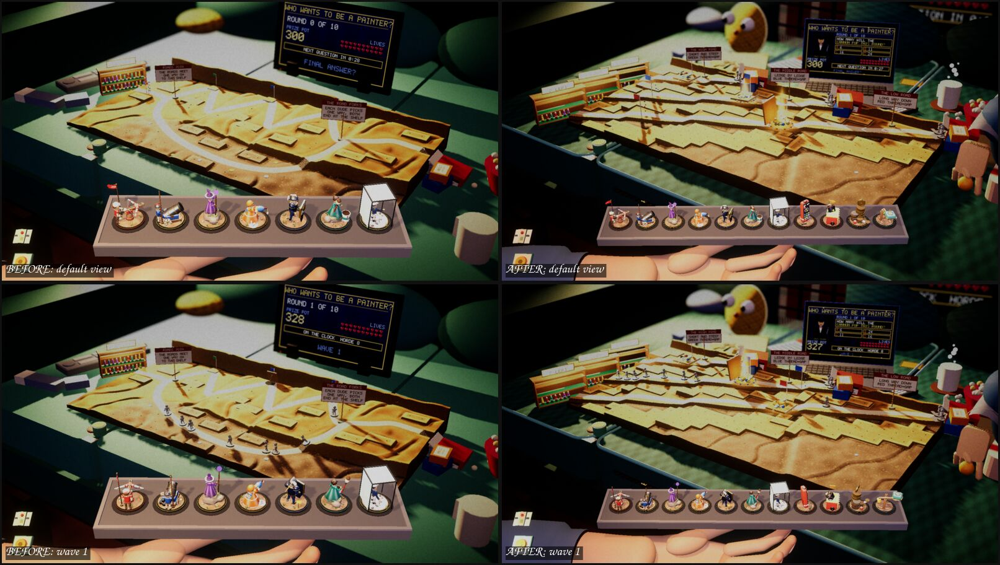

Devlog ·
Every room had to be rebuilt around a camera that sees only a strip of it
The showpiece passes dressed each table's room with props and story beats, and one fact about the default camera kept turning up in six of them, usually after the first screenshot showed an empty room.
Each table got a "showpiece pass": a room around the board, props at true size, a few moving things, four story beats across the ten waves, and signposts that leave after wave 2. Ten workers did one table each. The record they left is mostly the same discovery made ten times.
The camera sees a strip
The default camera looks across the board and sees very little of what stands behind it. The kitchen worker measured it first: only about the lowest 25 centimetres behind the table. The pub worker found "about a 20 cm strip" above the far edge, so the bar and its bottles were entirely out of frame; the fix was to lower the pub floor until bar and table were the same height. The garage worker logged the viewport and found about 40 cm of height behind the board, which put three of the four scoreboards off screen. The boss health displays (issue 325) had the same limit sideways: anything further left than about x=75 near the front was cropped, so most gauges went to the left of the board.
The consequence was rebuilds, not tweaks. The kitchen's cooker and fridge, first drawn as toys, were rebuilt full size so the camera would see their lowest parts: the oven timer on the cooker's front controls, magnets on the fridge door. The couch worker concluded that a 50 cm television on a cushion is a toy, and a real one on the wall is out of frame, so the quiz show plays on a laptop on the cushions, with the wall set's light flickering at the top of the picture.
The bathroom worker met the opposite fault. Its first screenshots showed room props four to six times too big beside the bath, so it rebuilt the room at one scale (a 4 cm tile became a 20 cm tile) and darkened the floor beyond the board.

The pub after the floor was lowered. Look at the bottles along the top: before, none of this was in the picture.
Things the first screenshot showed
Most faults were found by looking, because the bots do not. The record has a long list:
- Attic lids came out mirrored left to right; the bulb and mouse eyes rendered flat grey because the shared emissive material tone-maps amber to neutral. Both now use plain unlit materials.
- On the workbench, the first lens showed nothing and the label tape was invisible: both meshes had their triangles facing backwards. The fallen station signs lay face down and vanished until they fell backwards instead. The ring light sat 20 cm over the road and blew out the lens image.
- In the garage, the kick drum's skin and every chrome part rendered black until the worker gave its meshes tangents, which the stage shader needs. The first amp beam made the bot's towers "sulk" 385 times in one table.
- The painting desk's first paint splash was red and read as blood on the grey horde, so it became blue. The wave 7 haze was invisible, then clipped by the ground until the puffs were raised.
- On the bed, the first lamp blew the board out white and had to be scaled to 0.4. The moonlight cookie did nothing because this render pipeline has no light cookies, so curtain-shaped shadow slabs replaced it.
- The garage's first teal-less cable "looked like a pile of poo", in the garage towers worker's words (issue 370), and was recoloured.
The attic cost frame time: its table check failed at 38.1 ms against a 33.4 ms limit. Turning shadows off on the fine print and thinning the light shaft from six cones to three brought it to 22.2 ms.

The couch, before on the left and after on the right: one road became three on stepped cushions, and the quiz show moved to a laptop.
Two tables and eight towers
The picnic table passed its table check on the first full run (206 build cells, every base tower reaching the road from all of them). The picnic's Web test then crashed out of memory, and the worker traced it to its own measuring script: a click meant for the quality setting landed on the Table button and cycled to the couch, which at the time ran out of memory in the browser by itself (since fixed). The picnic alone runs at about 7 ms a frame there. The garage passed 13 of 13 after the tangent fix, with its lowest base-tower coverage 71 percent (Superglue).
The first towercheck failed all four picnic towers with zero shots. The check's grunts only walk two routes and it picks its cell by coverage of all six trails, so it stood beside unused trails. The garage towers' scripted scenes seemed to blast the wrong way until a logged angle to the target (1 degree) showed they were right: the camera looks toward -z, so +x is on the left.
A hundred and twenty tracks nobody has heard
The music worker made five build and five wave tracks for each of the ten tables, then twenty more for the picnic and garage: 120 in all. Each was gated on measured tempo, loudness, brightness, boominess and the loop seam. Things went wrong: the first candidates had up to 55 percent of their power below 60 Hz, so every track is high-passed; the first high-pass put a step at the loop point and the seam gate caught it; a stale generator kept writing with old settings; and a headless browser showed the Web player gets no clip from a downloaded Ogg, so everything ships as MP3. A garage track failed on tempo (90 beats a minute against 80 asked) and passed on a second seed. The worker's own risk note was that the published site would grow by about 300 MB per publish; a later task made the soundtrack page play the game's own files, so the music is on the site once.
What nobody has checked yet
- Every music track by ear; vocals are not reliably ruled out, since the voice check is a rough spectral hint.
- Real mouse clicks on the garage plug and the bed's blanket corner (scripted drags and ray tests stand in).
- A full ten-wave run on any of these tables with the final geometry; the picnic's waves 6 to 10 were played through a test command, and the garage bot loses to the wave 9 surge.
- Real towers killing a boss on the new health gauges (only a fake boss was used), and the picnic has none.
- The Web build for most of the passes, and sound by ear throughout.
- When the showpiece pass ended, the bathroom's fog cut sight at any distance; a later task added a shared hook and the fog now cuts sight only past four tiles. Nobody has looked at that in play.